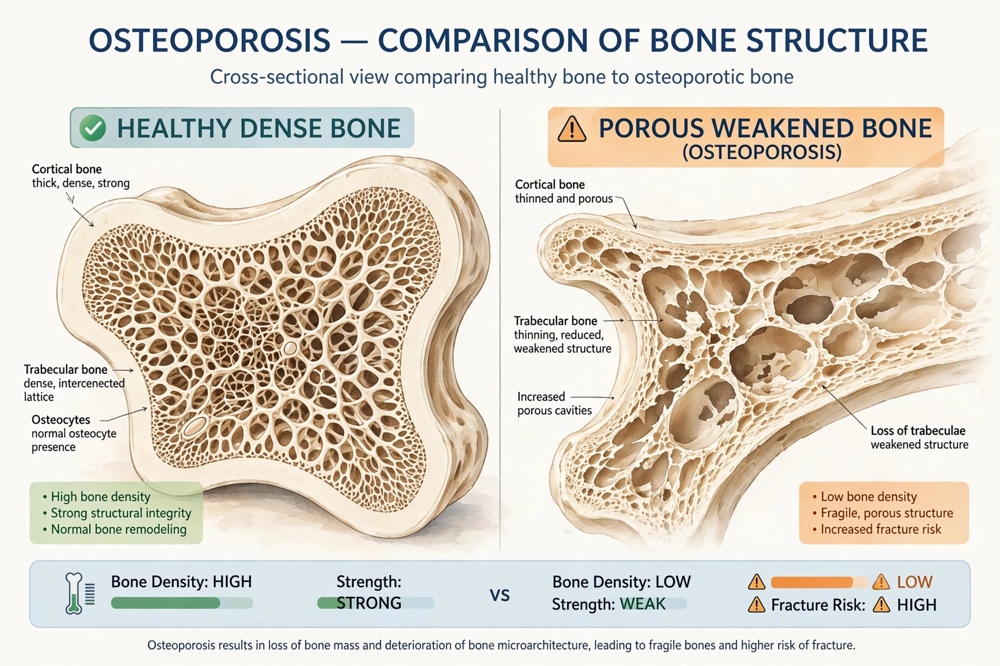

Osteoporosis is a systemic skeletal disorder characterized by low bone mass, deterioration of bone tissue, and disruption of bone microarchitecture, leading to increased bone fragility and fracture risk. It is commonest in postmenopausal women and older men.

Bone is constantly remodeled; with aging and estrogen loss, resorption outpaces formation. Long-term glucocorticoid therapy (see prednisone and Cushing's syndrome) is a leading secondary cause.
Typical sites are the hip, spine and wrist. Hip fractures carry high mortality and loss of independence in the elderly.
Weight-bearing exercise, adequate calcium and vitamin D, avoiding smoking and excess alcohol, and fall prevention reduce risk.